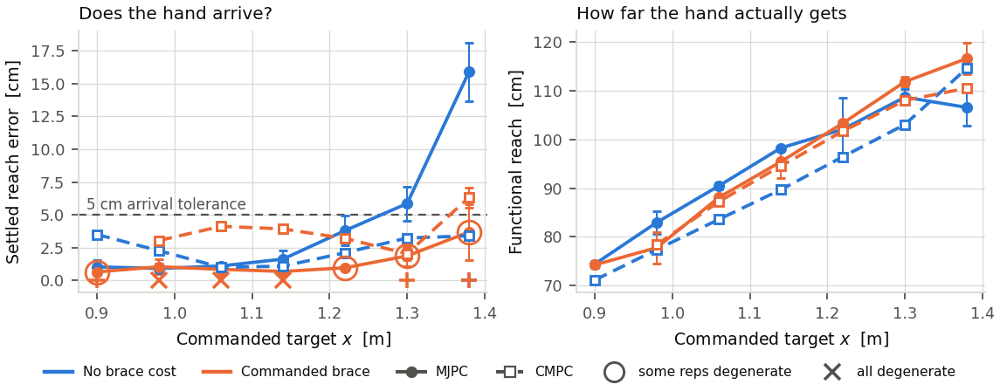
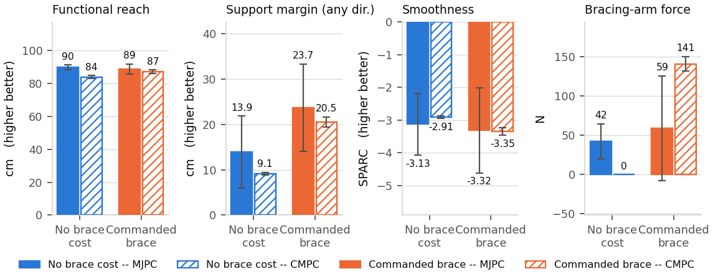
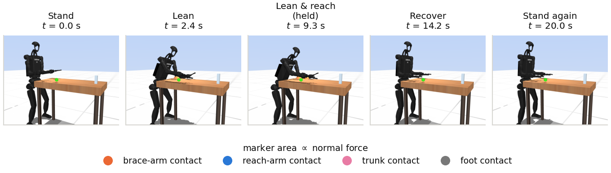
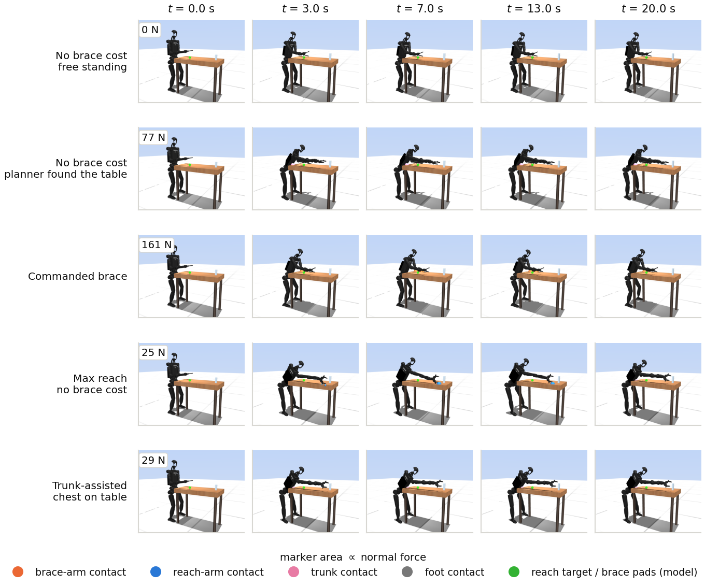
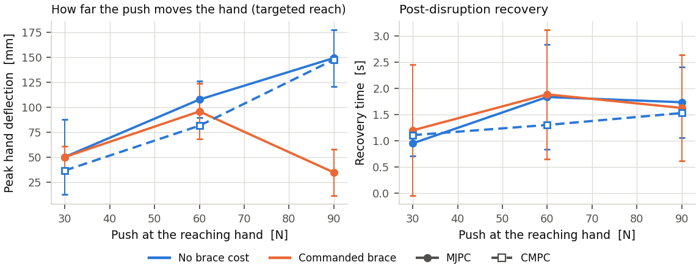
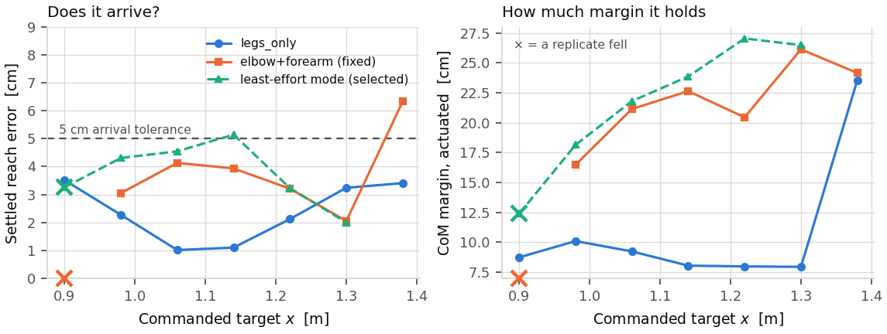

Crocoddyl-MPC run through the braced-reach protocol that produced the paper's MJPC baselines — same plant, same targets, same scorer, same plotting code — so the two controllers can be read off one axis.
What this produced. Every figure in the MJPC baseline set now has a CMPC counterpart and a two-planner overlay, from one code path: the CMPC harness writes testspeed's --dump_traj CSV, so brace_vs_stand.py analyze, bvs_plots.py and bvs_strips.py run on it unchanged. The target sweep was extended to seven targets and run on both.
Arrival band — the contiguous run of targets where every replicate lands within 5 cm, upright: MJPC 0.90–1.22 m no-brace, 0.90–1.30 m braced; CMPC 0.90–1.38 m no-brace, 0.98–1.38 m braced. Requiring in addition that no rollout rests its trunk on the slab — the clean band — cuts those to MJPC 0.90–1.22 m / none and CMPC 0.90–1.30 m / 0.98–1.22 m. The gap between the two rows is the whole story of the braced arms: they keep arriving, they just stop arriving on the arm they were told to use.
The two controllers were given the same plant (Lean_H12_Magpie.xml and Lean_Simple_H12_Magpie.xml are the same rigid body — identical nq/nv/nu, body, site, geom and actuator lists in the same order, identical masses, gains, force ranges, friction, solref/solimp, contact pairs and exclusions; they differ only in MJPC task metadata), the same targets, the same durations and the same scorer. Three things could not be held, and all three are visible in the numbers rather than hidden in them:
legs_only plan, a contact schedule with nothing on the table, which no weight can override. The difference is not that one makes table contacts and the other cannot: a legs_only rollout at x = 1.38 m settles with the gripper seated anyway, because the physics puts it there. The difference is that the gradient planner never MODELLED that contact, so it is an unmodelled disturbance rather than support being exploited. That is the result, not a confound.home keyframe, CMPC at stand (knees 0.55 rad). Each is its own pipeline's start. Functional reach — hand to ankle-midpoint — is posture-intrinsic and references neither.x = 1.06 m, 20 s, four replicates per arm per planner. This condition exists because the paper's default target is 0.905 m, where both arms arrive to within a centimetre — good for isolating a stability difference, useless for a reach one — and because it is the one target at which CMPC's declared brace does not survive the hold (§4).
| metric | MJPC no brace | MJPC brace | CMPC no brace | CMPC brace | unit |
|---|---|---|---|---|---|
| Functional reach | 89.7 ± 1.4 | 88.7 ± 3.0 | 83.8 ± 0.9 | 87.0 ± 1.1 | cm |
| Settled reach error | 1.0 ± 0.5 | 0.8 ± 0.5 | 1.0 ± 0.1 | 3.7 ± 0.3 | cm |
| Bracing-arm force | 42 ± 22 | 59 ± 67 | 0 | 141 ± 9 | N |
| Support margin (actuated) | 13.9 ± 7.9 | 23.7 ± 9.6 | 9.1 ± 0.3 | 20.5 ± 1.1 | cm |
| Forward margin (actuated) | 24.7 ± 19.5 | 39.9 ± 15.6 | 9.3 ± 0.3 | 28.2 ± 2.7 | cm |
| Smoothness SPARC | -3.13 ± 0.95 | -3.32 ± 1.30 | -2.91 ± 0.03 | -3.35 ± 0.11 | — |
| Hand jitter | 7.5 ± 3.8 | 5.1 ± 5.1 | 0.1 ± 0.0 | 2.9 ± 4.1 | mm |
| Worst-case push at hand | 82 ± 64 | 132 ± 47 | 57 ± 2 | 125 ± 4 | N |
| Peak torque ratio | 1.00 | 0.98 ± 0.09 | 0.99 ± 0.01 | 0.98 ± 0.00 | — |


Seven targets, 0.90–1.38 m along +x at fixed y, z; two replicates per point per arm per planner. The arrival band is the contiguous run of targets at which every replicate settles within 5 cm of the target it was given and stays upright; the clean band additionally requires that none of them rests the trunk on the slab:
| planner | no brace cost | commanded brace | no brace, clean | braced, clean |
|---|---|---|---|---|
| MJPC (sampling) | 0.90–1.22 m | 0.90–1.30 m | 0.90–1.22 m | none |
| CMPC (gradient) | 0.90–1.38 m | 0.98–1.38 m | 0.90–1.30 m | 0.98–1.22 m |
What ended each walk, per target — arrived / missed by more than 5 cm / rested the trunk / fell:
| planner / arm | 0.90 | 0.98 | 1.06 | 1.14 | 1.22 | 1.30 | 1.38 |
|---|---|---|---|---|---|---|---|
| MJPC no brace cost | aa | aa | aa | aa | aa | am | mm |
| MJPC commanded brace | ta | tt | tt | tt | at | ta | mt |
| CMPC no brace cost | aa | aa | aa | aa | aa | aa | tt |
| CMPC commanded brace | ff | aa | aa | aa | aa | tt | tt |
The static side of the same question, from croco_modes's IK+QP certification: legs_only stops being admissible past x = 1.14 m while elbow+forearm still certifies at 1.30 m; neither certifies at 1.38 or at the 1.60 m max-reach target, which is why the max-reach cell carries a best-effort pose marked admissible: false rather than a certified one.
That certification is about a pose, not about the target, and the closed loop beats it. legs_only is rejected at 1.22 and 1.30 m on base residual — 14.4 and 14.6 N — not on reach (5.1 and 19.9 mm) and not on torque (0.99, 0.96). The pose being rejected is the one solve_ik produces: feet pinned at the seed stance, hand driven to target, nothing in the objective about balance. It puts the CoM 165 mm ahead of the ankle midpoint, and the static LP calls it infeasible. The MPC, given the same target and no brace, settles somewhere else entirely — CoM 60 mm ahead, feasible, with 8.5 and 7.4 cm of actuated support margin — and holds it for the full 16 s with 21 and 32 mm of reach error. The difference is a counterweight: at 1.30 m the MPC hinges at the hip and puts the pelvis 30 mm behind the ankle midpoint where the IK pose has it 76 mm in front, and that 106 mm of hip travel costs only 61 mm of reach. Read the enumeration as what it is: a chooser of contact modes, and a conservative screen on the workspace, not a bound on it.
At 1.38 m the verdict is different in kind. All 16 arm+wrist subsets fail there, and every one of them fails on reach (56–98 mm short) or on a site that will not seat — with torque ratios of 0.48–0.63 and base residuals of zero. The far end is a kinematic limit of the arm. No contact schedule buys it back.
CMPC's elbow+forearm brace does not survive a 20 s hold at the paper's default target. 4 of 4 nominal braced replicates fell (x = 0.905). At x ≥ 0.98 the same plan, the same gains and the same loop hold for the full 20 s in every cell measured (0.98, 1.06, 1.14, 1.22). The certified static brace force at 0.9047 is 51.5 N against 80.9 N at 1.05 — at the near target the declared contact is a light touch, and a rigid bilateral constraint on a light touch is the configuration this formulation is least able to defend.
This is not the horizon trap that produced the first version of these runs, and the two are worth telling apart because they look identical from outside. Clamping the held plan index to len(us)-1 makes MPC.__call__ take its tail branch and rebuild a one-node problem: mean solve collapses 18.9 → 2.5 ms and the robot is on the floor by t = 15 s in every cell. Holding at len(us) − H keeps the window full, and then only the two nearest targets fail. croco_twin.py's own hold submode still uses len(us)-1 — left alone because recorded results depend on it, but S19's “8 s hold” should be read as a hold that was degrading.



Failing at both ends is the signature of a schedule that is right in the middle, so the sweep was repeated with the mode chosen per target. The policy is croco_modes' own ranking applied mechanically: enumerate all 16 subsets of {elbow, forearm, palm, wrist}, keep the admissible ones, take the least normalized actuator effort, and decline where nothing certifies. No hand-picking — otherwise the comparison is a search over 16 modes dressed up as a controller. It selects elbow+wrist at 0.90, forearm+palm at 0.98, forearm+wrist at 1.06–1.30, and nothing at 1.38. elbow+forearm, the mode used everywhere else in this study, is never the ranked choice at any target.
x [m] selected mode outcome err[cm] armN margin fell 0.90 elbow+wrist fell 39.2 53 7.6 1/2 vs 2/2 0.98 forearm+palm held 4.3 102 18.2 0/2 vs 0/2 1.06 forearm+wrist held 4.5 106 21.8 0/2 vs 0/2 1.14 forearm+wrist held 5.1 110 23.9 0/2 vs 0/2 1.22 forearm+wrist held 3.2 106 27.0 0/2 vs 0/2 1.30 forearm+wrist held 2.0 108 26.5 0/2 vs 0/2 1.38 (none certifies) declined -- -- -- 0/2

A real but partial improvement, and the two ends fail for different reasons. Through the middle the selected mode holds more margin — +0.4 to +6.5 cm of actuated support margin, against 8–10 cm for legs_only at the same targets — while pushing 25–30% less force through the bracing arm (102–110 N against 131–146 N), at reach error within 1.2 cm of the fixed mode. That is the effort ranking doing exactly what it claims.
At the near target it halves the fall rate (2/2 → 1/2) without eliminating it. legs_only holds 0.90 m with 8.7 cm of margin and never falls, so bracing there is harmful regardless of which mode is chosen — which points back at the light-touch diagnosis above and not at mode selection. At the far target the policy declines, correctly: nothing certifies at 1.38 m, and the fixed mode only “reaches” it by missing by 6.3 cm with 89 N through the trunk. Automatic mode selection is worth having and is not the missing piece.
metric MJPC/stand MJPC/brace CMPC/stand CMPC/brace unit functional reach 89.7 ± 1.4 88.7 ± 3.0 83.8 ± 0.9 87.0 ± 1.1 cm settled reach error 1.0 ± 0.5 0.8 ± 0.5 1.0 ± 0.1 3.7 ± 0.3 cm brace load, all contacts 61 ± 64 219 ± 158 0 161 ± 16 N bracing-arm force 42 ± 22 59 ± 67 0 141 ± 9 N trunk load 0 121 ± 212 0 0 N peak contact load 86 ± 63 368 ± 320 0 180 ± 5 N support margin (actuated) 13.9 ± 7.9 23.7 ± 9.6 9.1 ± 0.3 20.5 ± 1.1 cm forward margin (actuated) 24.7 ± 19.5 39.9 ± 15.6 9.3 ± 0.3 28.2 ± 2.7 cm smoothness SPARC -3.13 ± 0.95 -3.32 ± 1.30 -2.91 ± 0.03 -3.35 ± 0.11 -- hand jitter 7.46 ± 3.75 5.05 ± 5.11 0.14 ± 0.04 2.86 ± 4.11 mm worst-case push at hand 82 ± 64 132 ± 47 57 ± 2 125 ± 4 N settling time 6.3 ± 3.7 3.9 ± 2.6 2.3 ± 0.0 2.4 ± 0.1 s peak torque ratio 1.00 0.98 ± 0.09 0.99 ± 0.01 0.98 ± 0.00 -- runs bracing (>15 N) 8/8 8/8 0/8 8/8 -- trunk-assisted (pooled) 0/8 5/8 0/8 0/8 --
metric stand/Targeted brace/Targeted stand/Extended brace/Extended stand/Max brace/Max unit functional reach 71.5 ± 0.6 n/a 83.8 ± 0.9 87.0 ± 1.1 118.5 ± 1.6 n/a cm settled reach error 3.4 ± 0.1 n/a 1.0 ± 0.1 3.7 ± 0.3 17.8 ± 1.0 n/a cm brace load, all contacts 0 n/a 0 161 ± 16 24 ± 6 n/a N bracing-arm force 0 n/a 0 141 ± 9 0 n/a N trunk load 0 n/a 0 0 20 ± 9 n/a N peak contact load 0 n/a 0 180 ± 5 75 ± 24 n/a N support margin (contact) 8.7 ± 0.3 n/a 10.4 ± 0.4 31.6 ± 2.2 15.4 ± 1.2 n/a cm support margin (actuated) 8.6 ± 0.3 n/a 9.1 ± 0.3 20.5 ± 1.1 15.1 ± 1.3 n/a cm forward margin (contact) 12.1 ± 0.8 n/a 10.4 ± 0.4 45.0 ± 3.2 67.0 ± 6.2 n/a cm forward margin (actuated) 12.0 ± 0.7 n/a 9.3 ± 0.3 28.2 ± 2.7 36.1 ± 4.0 n/a cm smoothness SPARC -3.03 ± 0.03 n/a -2.91 ± 0.03 -3.35 ± 0.11 -3.40 ± 1.03 n/a -- hand jitter 0.17 ± 0.01 n/a 0.14 ± 0.04 2.86 ± 4.11 11.61 ± 16.55 n/a mm reach error spread 0.10 ± 0.01 n/a 0.04 ± 0.02 1.60 ± 1.57 8.62 ± 14.80 n/a mm worst-case push at hand 55 ± 1 n/a 57 ± 2 125 ± 4 68 ± 17 n/a N settling time (initial) 2.3 ± 0.0 n/a 2.3 ± 0.0 2.4 ± 0.1 6.5 ± 8.6 n/a s peak torque ratio 0.98 ± 0.00 n/a 0.99 ± 0.01 0.98 ± 0.00 1.00 n/a -- runs bracing (>15 N) 0/4 n/a 0/8 8/8 4/4 n/a -- trunk-assisted (pooled) 0/4 n/a 0/8 0/8 3/4 n/a -- fell (excluded) 0/4 4/4 0/8 0/8 0/4 4/4 --
push [N] stand peak[mm] brace peak[mm] stand rec[s] brace rec[s] fell s/b 30 37 ± 0 510 ± 570 1.11 ± 0.04 1.25 ± 0.76 0/2 60 81 ± 1 313 ± 467 1.30 ± 0.04 3.99 0/2 90 147 ± 3 582 ± 1208 1.53 ± 0.03 1.88 ± 1.96 0/2
x [m] selected mode outcome err[cm] armN margin fell 0.90 elbow+wrist fell 39.2 53 7.6 1/2 vs 2/2 0.98 forearm+palm held 4.3 102 18.2 0/2 vs 0/2 1.06 forearm+wrist held 4.5 106 21.8 0/2 vs 0/2 1.14 forearm+wrist held 5.1 110 23.9 0/2 vs 0/2 1.22 forearm+wrist held 3.2 106 27.0 0/2 vs 0/2 1.30 forearm+wrist held 2.0 108 26.5 0/2 vs 0/2 1.38 (none certifies) declined -- -- -- 0/2
export CL_ASSETS_DIR=... LEAN_TASK_DIR=... MUJOCO_GL=egl export MJPC_BIN=<mujoco_mpc>/build_cmake/bin/testspeed export BVS_SWEEP_X="0.90,0.98,1.06,1.14,1.22,1.30,1.38" # the sampling baseline studies/brace_vs_stand.py run --out studies/runs/2026-08-22_brace_vs_stand --stage all studies/brace_vs_stand.py analyze --run studies/runs/2026-08-22_brace_vs_stand --append # the gradient side: one cell per target, then the episodes studies/cmpc_brace_vs_stand.py cells --out studies/runs/2026-08-22_cmpc_bvs --stage all env LD_PRELOAD=$CROCO_OMP \ studies/cmpc_brace_vs_stand.py run --out studies/runs/2026-08-22_cmpc_bvs --stage all # every figure, both planners studies/make_cmpc_figures.sh